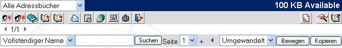
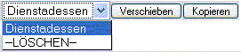

| Wenn Sie das Adressbuch öffnen
, ändert sich die Toolbar, um Ihnen die Möglichkeit zur Bearbeitung zu geben.
Adressbuchtoolbar:

Referenztabelle:
| Icon |
Name |
Aktion |
|
|
Neuer Kontakt |
Neuen Kontakt ( Adresse ) anlegen |
|
|
Neue Gruppe |
Neue Gruppe anlegen |
|
|
Adressbücher bearbeiten |
Neues Adressbuch anlegen oder Adressbuchnamen ändern / löschen |
|
|
Adressbuch importieren |
Adressbuch importieren |
|
|
Adressbuch exportieren |
Adressbuch exportieren |
|
|
Zurück zur Nachrichtenliste |
Geht zurück zur Übersicht der eingegangenen Nachrichten |
 |
Kalender |
Öffnet den Kalender |
 |
WebDisk |
Öffnet die WebDisk-Applikation |
 |
Benutzereinstellungen |
Erlaubt die persönlichen Einstellungen zu ändern. |
 | Logout |
Webmail verlassen |
 |
Neue Nachricht schreiben |
Erstellen einer neuen Nachricht mit den gewählten Adressen |
|
|
Zeige Liste |
Zeige Liste der gewählten Adressen |
|
|
Abwählen |
Abwählen aller gewählten Adressen |
Es gibt noch eine zusätzliche kleine Toolbar unter der Nachrichtentoolbar:
Sie können nach einer Adresse suchen.
Sie können Adressen in andere Adressbücher verschieben oder löschen,

indem Sie statt eines Adressbuches -LÖSCHEN- auswählen und dann verschieben.
|